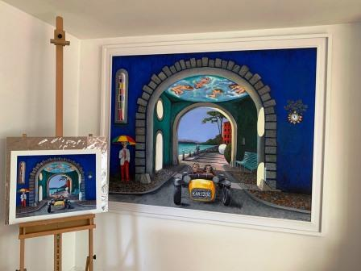

Kathy Wedge

Adeiladau cain Biwmares yw’r ysbrydoliaeth ar gyfer llawer o fy mhaentiadau.
Roedd y cyfnod clo diweddar yn fy atgoffa o rhaglen deledu The Prisoner yng Ngogledd Cymru ac arweiniodd hyn at fwy o gelfyddyd swreal.
Beaumaris’s elegant buildings have been the inspiration for a lot of my paintings.
Recent lockdowns reminded me of The Prisoner filmed in north Wales and resulted in more surreal art.
01248 853251 / 07836 693 483
k.wedge@btinternet.com
http://www.facebook.com/kwfineart
SWN Y COED, 13 PARC TYDDYN, RED WHARF BAY, LL75 8NQ
O Borthaethwy ar yr A5025 tuag at Amlwch am tua pedair milltir a throwch i’r dde tuag at The Ship Inn ar Draeth Coch.
Parc Tyddyn yw’r ffordd gyntaf ar y dde a Sŵn y Coed yw’r ail fyngalo o waelod y ffordd ar y chwith
From Menai Bridge on A5025 towards Amlwch for about four miles and turn right towards The Ship Inn on Red Wharf Bay.
Parc Tyddyn is the first road on the right and Swn y Coed is the second bungalow from the bottom of the road on the left.